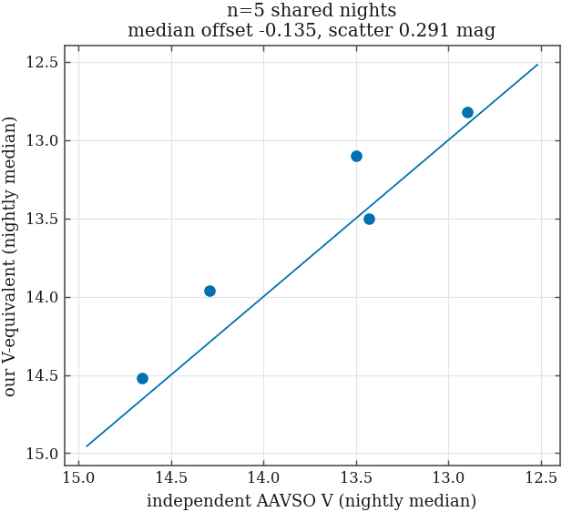
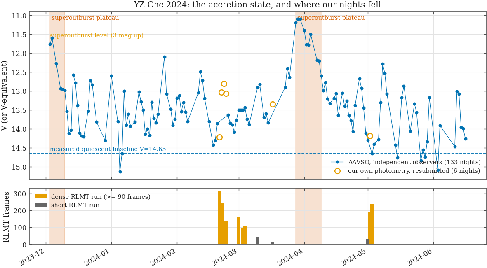
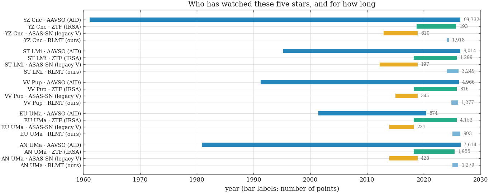
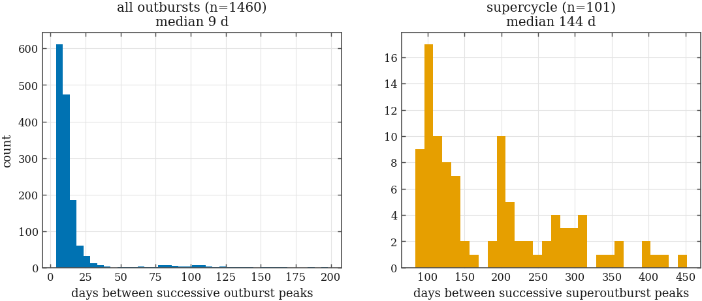

0 · Why ask anyone else at all?
Our photometry is differential. Every light curve in this project
was solved with the ensemble's gauge fixed by mean(ZP) = 0, and
the catalogue tie moves a whole block onto a standard zero point — it
does not tell one night from another on an absolute scale. So a YZ Cnc run
that sits 1.4 magnitudes above the previous night's looks, in our own
8,716 frames, exactly like one that does not.
That is a problem, because the strategy's third science question has two branches and the branch point is an absolute-brightness fact:
Common superhumps are a superoutburst phenomenon in SU UMa systems. So the question this page has to answer is not “was the star bright?” but “was it in a superoutburst on the nights we ran at 8 s cadence?” — and nothing inside our own pixels can answer it.
1 · Who was asked, and what came back
Four sources, the ones the strategy's §7 names. Every response is
cached verbatim under products/external/ with the query text,
the pull date and a sha256, so nothing on this page rests on a query nobody
can re-run.
| source | target | points | status | pulled | cached response |
|---|---|---|---|---|---|
| AAVSO (AID) | AN UMa | 7,614 | reached | 2026-08-20 | products/external/aavso/anuma.delim.gz |
| AAVSO (AID) | EU UMa | 874 | reached | 2026-08-20 | products/external/aavso/euuma.delim.gz |
| AAVSO (AID) | ST LMi | 9,014 | reached | 2026-08-20 | products/external/aavso/stlmi.delim.gz |
| AAVSO (AID) | VV Pup | 4,966 | reached | 2026-08-20 | products/external/aavso/vvpup.delim.gz |
| AAVSO (AID) | YZ Cnc | 99,732 | reached | 2026-08-20 | products/external/aavso/yzcnc.delim.gz |
| ZTF (IRSA) | AN UMa | 1,955 | reached | 2026-08-20 | products/external/ztf/anuma.csv.gz |
| ZTF (IRSA) | EU UMa | 4,152 | reached | 2026-08-20 | products/external/ztf/euuma.csv.gz |
| ZTF (IRSA) | ST LMi | 1,299 | reached | 2026-08-20 | products/external/ztf/stlmi.csv.gz |
| ZTF (IRSA) | VV Pup | 816 | reached | 2026-08-20 | products/external/ztf/vvpup.csv.gz |
| ZTF (IRSA) | YZ Cnc | 193 | reached | 2026-08-20 | products/external/ztf/yzcnc.csv.gz |
| ASAS-SN (legacy V) | AN UMa | 428 | reached | 2026-08-20 | products/external/asassn/anuma.json.gz |
| ASAS-SN (legacy V) | EU UMa | 231 | reached | 2026-08-20 | products/external/asassn/euuma.json.gz |
| ASAS-SN (legacy V) | ST LMi | 197 | reached | 2026-08-20 | products/external/asassn/stlmi.json.gz |
| ASAS-SN (legacy V) | VV Pup | 345 | reached | 2026-08-20 | products/external/asassn/vvpup.json.gz |
| ASAS-SN (legacy V) | YZ Cnc | 610 | reached | 2026-08-20 | products/external/asassn/yzcnc.json.gz |
| ATLAS forced phot. | AN UMa | — | UNREACHABLE | 2026-08-20 | — |
| ATLAS forced phot. | EU UMa | — | UNREACHABLE | 2026-08-20 | — |
| ATLAS forced phot. | ST LMi | — | UNREACHABLE | 2026-08-20 | — |
| ATLAS forced phot. | VV Pup | — | UNREACHABLE | 2026-08-20 | — |
| ATLAS forced phot. | YZ Cnc | — | UNREACHABLE | 2026-08-20 | — |
vsx.aavso.org/index.php?view=api.delim, found by reading the
LCG v2 client's own JavaScript. The documented WebObs HTML search
silently ignores its date parameters — it answered a request for
2024-02-20…25 with observations from June 2026 — and at 200 rows
per 25-second page it would have needed ~500 requests for YZ Cnc alone.
A pipeline that had trusted those date parameters would have classified the
wrong nights and never known.UNREACHABLE — ATLAS forced photometry requires a registered account and API token; none is configured in this environment and this script does not create one. Probe result: HTTPError: HTTP Error 403: Forbidden
ATLAS is a real loss and not a small one: it is the survey with the
cadence and the bright-end dynamic range that would have covered YZ Cnc's
outbursts where ZTF saturates. Getting it needs a credentialled account,
which this pipeline does not have and did not create. The gap is recorded
per target in cv_ext_fetch rather than left as an absence a
later reader would mistake for “ATLAS saw nothing”.
2 · Whose data is this, actually?
The first thing the AAVSO pull returned for YZ Cnc was our own
photometry. Observer code MALW, comment
“TAKEN WITH MACRO CONSORTIUM'S ROBERT L. MUTEL TELESCOPE AT WINER
OBSERVATORY”, in Sloan SG/SR/SI
— the same photons we are trying to find an external check on.
JD 2400000.0-2500000.0; 1499 of 99732 rows are RLMT data resubmitted to AAVSO (observer code or comment) and are excluded from every independent aggregate
That leaves our own rows with exactly one legitimate job: filling nights no outside observer covered — and they can only do it if they are first shown to agree with the people who did. On the 133 independent nights in this season, our submissions land on the same ladder through a measured band offset, never an assumed one:
| band | offset from V, measured on shared nights |
|---|---|
| SG | +0.064 (n=11 nights, scatter 0.373 mag) |
| SI | +0.096 (n=11 nights, scatter 0.336 mag) |
| SR | +0.016 (n=12 nights, scatter 0.298 mag) |

This is a check on brightness scale, not on our pipeline: these are the same photons, reduced separately. It licenses the statement “the star was at V≈13 that night”. It licenses nothing about our photometric precision.
3 · What does “quiescence” mean here?
Not a number from a catalogue. The baseline is measured from the star's own record: the median of the faintest 10% of independent nightly points in the season around the window — V = 14.6545, from 8,949 independent nights.
Nights are then graded by amplitude above that baseline, and episodes by what actually distinguishes a superoutburst in an SU UMa star:
| quantity | rule | why this and not something else |
|---|---|---|
| night: quiescent | amplitude ≤ 0.6 mag | |
| night: outburst | amplitude ≥ 1.0 mag | the gap between the two is reported as ELEVATED rather than rounded to a neighbour — a star caught mid-rise is genuinely neither |
| episode: superoutburst | peak ≥ 3.0 mag above quiescence AND a plateau ≥ 8.0 d | both, because amplitude alone promotes a well-caught normal outburst and duration alone merges a run of unrelated ones |
| plateau | time within 1.5 mag of peak, inside the episode | the grading duration is the plateau, not the whole excursion: on a star rarely at true quiescence the excursion merges an event with its own decline and with whatever follows. Grading on the excursion produced a ‘38-day superoutburst’, which is not a thing that exists; the same event's plateau is 13 d, which is. |
4 · YZ Cnc in 2024, with our nights on it

Every outburst episode the independent record traces in this season:
| episode (above-threshold span) | peak | peak amp (mag) | span (d) | plateau | plateau (d) | grade | why |
|---|---|---|---|---|---|---|---|
| 2023-12-03 → 2023-12-16 | 2023-12-04 | 3.15 | 14 | 2023-12-03 → 2023-12-10 | 8 | SUPEROUTBURST | peak 3.15 mag above quiescence (>= 3.0) AND a plateau of 8 d within 1.5 mag of peak, 2023-12-03 to 2023-12-10 (>= 8) |
| 2023-12-21 → 2023-12-23 | 2023-12-22 | 2.03 | 3 | 2023-12-21 → 2023-12-23 | 3 | NORMAL OUTBURST | peak only 2.03 mag above quiescence (< 3.0); plateau only 3 d (< 8) |
| 2024-01-01 → 2024-01-01 | 2024-01-01 | 2.15 | 1 | 2024-01-01 → 2024-01-01 | 1 | NORMAL OUTBURST | peak only 2.15 mag above quiescence (< 3.0); plateau only 1 d (< 8) |
| 2024-01-07 → 2024-01-09 | 2024-01-07 | 1.75 | 3 | 2024-01-07 → 2024-01-09 | 3 | NORMAL OUTBURST | peak only 1.75 mag above quiescence (< 3.0); plateau only 3 d (< 8) |
| 2024-01-14 → 2024-01-16 | 2024-01-14 | 1.73 | 3 | 2024-01-14 → 2024-01-16 | 3 | NORMAL OUTBURST | peak only 1.73 mag above quiescence (< 3.0); plateau only 3 d (< 8) |
| 2024-01-20 → 2024-02-05 | 2024-01-26 | 2.65 | 17 | 2024-01-26 → 2024-01-29 | 4 | NORMAL OUTBURST | peak only 2.65 mag above quiescence (< 3.0); plateau only 4 d (< 8) |
| 2024-02-11 → 2024-02-14 | 2024-02-12 | 2.26 | 4 | 2024-02-11 → 2024-02-14 | 4 | NORMAL OUTBURST | peak only 2.26 mag above quiescence (< 3.0); plateau only 4 d (< 8) |
| 2024-02-25 → 2024-02-25 | 2024-02-25 | 1.12 | 1 | 2024-02-25 → 2024-02-25 | 1 | NORMAL OUTBURST | peak only 1.12 mag above quiescence (< 3.0); plateau only 1 d (< 8) |
| 2024-03-01 → 2024-03-05 | 2024-03-04 | 1.32 | 5 | 2024-03-01 → 2024-03-05 | 5 | NORMAL OUTBURST | peak only 1.32 mag above quiescence (< 3.0); plateau only 5 d (< 8) |
| 2024-03-10 → 2024-03-14 | 2024-03-11 | 1.93 | 5 | 2024-03-10 → 2024-03-14 | 5 | NORMAL OUTBURST | peak only 1.93 mag above quiescence (< 3.0); plateau only 5 d (< 8) |
| 2024-03-23 → 2024-04-29 | 2024-03-29 | 3.65 | 38 | 2024-03-28 → 2024-04-09 | 13 | SUPEROUTBURST | peak 3.65 mag above quiescence (>= 3.0) AND a plateau of 13 d within 1.5 mag of peak, 2024-03-28 to 2024-04-09 (>= 8) |
| 2024-05-07 → 2024-05-10 | 2024-05-08 | 2.46 | 4 | 2024-05-07 → 2024-05-10 | 4 | NORMAL OUTBURST | peak only 2.46 mag above quiescence (< 3.0); plateau only 4 d (< 8) |
| 2024-05-17 → 2024-05-18 | 2024-05-18 | 1.89 | 2 | 2024-05-17 → 2024-05-18 | 2 | NORMAL OUTBURST | peak only 1.89 mag above quiescence (< 3.0); plateau only 2 d (< 8) |
| 2024-05-23 → 2024-05-24 | 2024-05-23 | 1.41 | 2 | 2024-05-23 → 2024-05-24 | 2 | NORMAL OUTBURST | peak only 1.41 mag above quiescence (< 3.0); plateau only 2 d (< 8) |
| 2024-05-30 → 2024-05-30 | 2024-05-30 | 1.58 | 1 | 2024-05-30 → 2024-05-30 | 1 | NORMAL OUTBURST | peak only 1.58 mag above quiescence (< 3.0); plateau only 1 d (< 8) |
| 2024-06-12 → 2024-06-13 | 2024-06-12 | 1.74 | 2 | 2024-06-12 → 2024-06-13 | 2 | NORMAL OUTBURST | peak only 1.74 mag above quiescence (< 3.0); plateau only 2 d (< 8) |
The season contains one superoutburst, and our dense runs are not in it. The nearest we came was two frames on 2024-03-26 and two on 2024-03-27 — the star went into superoutburst on 2024-03-28.
5 · Night by night, and what backs each one
cv_frames.night is the LOCAL evening date at Winer (UTC−7),
and every CV frame in this season was taken after local midnight — so
the UTC date is the night label plus one day. The strategy's
“Feb 21–24, Mar 1–4, May 2–3” are UTC dates and
are the same nights the manifest calls 2024-02-20…23,
2024-02-29/03-02/03-03 and 2024-05-01/02. Comparing date strings across that
boundary would move every tag onto its neighbour, on a star that rises
1.4 mag in a day.| UTC night | manifest night | frames | filters | state | V | amp | basis | episode | evidence |
|---|---|---|---|---|---|---|---|---|---|
| 2024-02-21 | 2024-02-20 | 313 DENSE | R,G,I | QUIESCENT | 14.21 | 0.44 | own | — | no independent observer covered this night; RLMT photometry resubmitted to AAVSO gives V-equivalent 14.21 via measured band offsets. Superoutburst independently excluded: bracketed by 2024-02-20 (V=13.85, +0.80 mag above quiescence) and 2024-02-25 (V=13.63, +1.03) — only 5 d apart, so a >= 8 d superoutburst plateau cannot fit between them, and neither endpoint is anywhere near superoutburst level |
| 2024-02-22 | 2024-02-21 | 241 DENSE | I,G,R | OUTBURST | 13.03 | 1.63 | own | — | no independent observer covered this night; RLMT photometry resubmitted to AAVSO gives V-equivalent 13.03 via measured band offsets. Superoutburst independently excluded: bracketed by 2024-02-20 (V=13.85, +0.80 mag above quiescence) and 2024-02-25 (V=13.63, +1.03) — only 5 d apart, so a >= 8 d superoutburst plateau cannot fit between them, and neither endpoint is anywhere near superoutburst level |
| 2024-02-23 | 2024-02-22 | 130 DENSE | G,R,I | OUTBURST | 12.80 | 1.86 | own | — | no independent observer covered this night; RLMT photometry resubmitted to AAVSO gives V-equivalent 12.80 via measured band offsets. Superoutburst independently excluded: bracketed by 2024-02-20 (V=13.85, +0.80 mag above quiescence) and 2024-02-25 (V=13.63, +1.03) — only 5 d apart, so a >= 8 d superoutburst plateau cannot fit between them, and neither endpoint is anywhere near superoutburst level |
| 2024-02-24 | 2024-02-23 | 135 DENSE | G,I,R | OUTBURST | 13.07 | 1.59 | own | — | no independent observer covered this night; RLMT photometry resubmitted to AAVSO gives V-equivalent 13.07 via measured band offsets. Superoutburst independently excluded: bracketed by 2024-02-20 (V=13.85, +0.80 mag above quiescence) and 2024-02-25 (V=13.63, +1.03) — only 5 d apart, so a >= 8 d superoutburst plateau cannot fit between them, and neither endpoint is anywhere near superoutburst level |
| 2024-03-01 | 2024-02-29 | 164 DENSE | R,G,I | OUTBURST | 13.50 | 1.15 | independent | NORMAL OUTBURST | 1 independent point(s) from PYG in Vis.; median 13.50 |
| 2024-03-03 | 2024-03-02 | 97 DENSE | G,I,R | OUTBURST | 13.50 | 1.15 | independent | NORMAL OUTBURST | 2 independent point(s) from KLO, VTY in Vis.; median 13.50 |
| 2024-03-04 | 2024-03-03 | 104 DENSE | R,G,I | OUTBURST | 13.43 | 1.22 | independent | NORMAL OUTBURST | 8 independent point(s) from DFS, FJQ, MUY, PYG in V,Vis.; median 13.43 |
| 2024-03-10 | 2024-03-09 | 45 | R,G,I | OUTBURST | 12.90 | 1.76 | independent | NORMAL OUTBURST | 1 independent point(s) from HKEB in V; median 12.90 |
| 2024-03-17 | 2024-03-16 | 16 | R,G,I | OUTBURST | 13.35 | 1.31 | own | — | no independent observer covered this night; RLMT photometry resubmitted to AAVSO gives V-equivalent 13.35 via measured band offsets. Superoutburst independently excluded: bracketed by 2024-03-15 (V=13.84, +0.82 mag above quiescence) and 2024-03-23 (V=12.90, +1.75) — only 8 d apart, so a >= 8 d superoutburst plateau cannot fit between them, and neither endpoint is anywhere near superoutburst level |
| 2024-03-26 | 2024-03-25 | 2 | G | NO DATA | — | — | none | SUPEROUTBURST | a bracketing point is itself at superoutburst level — the gap is inside an event, not outside one |
| 2024-03-27 | 2024-03-26 | 2 | G | NO DATA | — | — | none | SUPEROUTBURST | a bracketing point is itself at superoutburst level — the gap is inside an event, not outside one |
| 2024-04-17 | 2024-04-16 | 3 | r | OUTBURST | 13.63 | 1.02 | independent | SUPEROUTBURST | 7 independent point(s) from DFS, FJQ, PYG in V,Vis.; median 13.63 |
| 2024-05-01 | 2024-04-30 | 31 | r | QUIESCENT | 14.29 | 0.36 | independent | — | 1 independent point(s) from DFS in V; median 14.29 |
| 2024-05-02 | 2024-05-01 | 189 DENSE | g,i,r | QUIESCENT | 14.19 | 0.47 | own | — | no independent observer covered this night; RLMT photometry resubmitted to AAVSO gives V-equivalent 14.19 via measured band offsets. Superoutburst independently excluded: bracketed by 2024-05-01 (V=14.29, +0.36 mag above quiescence) and 2024-05-03 (V=14.65, +0.00) — only 2 d apart, so a >= 8 d superoutburst plateau cannot fit between them, and neither endpoint is anywhere near superoutburst level |
| 2024-05-03 | 2024-05-02 | 237 DENSE | g,i,r | QUIESCENT | 14.65 | 0.00 | independent | — | 6 independent point(s) from DFS, FJQ in V; median 14.65 |
basis is the honest part: independent means outside
observers covered that night; own means only our own
resubmitted photometry did, and the evidence column then also carries the
bracket test; bracketed/none mean nobody measured
the star and the entry rests on its neighbours alone.
6 · The branch
| dense run (UTC) | frames | state | amp above quiescence (mag) |
|---|---|---|---|
| 2024-02-21 | 313 | QUIESCENT | 0.44 |
| 2024-02-22 | 241 | OUTBURST | 1.63 |
| 2024-02-23 | 130 | OUTBURST | 1.86 |
| 2024-02-24 | 135 | OUTBURST | 1.59 |
| 2024-03-01 | 164 | OUTBURST | 1.15 |
| 2024-03-03 | 97 | OUTBURST | 1.15 |
| 2024-03-04 | 104 | OUTBURST | 1.22 |
| 2024-05-02 | 189 | QUIESCENT | 0.47 |
| 2024-05-03 | 237 | QUIESCENT | 0.00 |
What this means for CV-P3-yzcnc-superhump, concretely:
- The superhump branch is closed for this season. No dense run sits in a superoutburst, and common superhumps do not occur outside one. There is no O–C of superhump maxima to build and no dPsh/dt to quote; the abstract should not promise one.
- The fallback is live, and it is still conditional. §4.19 promises orbital-hump + flickering statistics only after an empirical S/N check on the 8 s High Gain frames at quiescent V≈14.5. Three dense runs are quiescent at V = 14.2–14.7 — exactly that regime — so the check is now well posed and unavoidable.
- A third thing exists that the strategy did not anticipate. Six dense runs (819 frames on Feb 22–24, 365 on Mar 1–4) sit inside normal outbursts, at 8 s cadence, three filters. Feb 21→22 brackets the rise itself. That is not a consolation prize for a missing superhump section — it is cycle-resolved multi-colour coverage of normal-outburst structure, and it should be written up as its own result rather than folded into the fallback.
7 · The five targets: what the surveys add
Coverage span, cadence and bands per target and source, straight from
cv_external.
YZ Cnc
RLMT: 1,918 frames on 27 nights.
| source | points | coverage | span (yr) | nights | median gap (d) | bands | notes |
|---|---|---|---|---|---|---|---|
| AAVSO (AID) | 99,732 | 1961-02-11 → 2026-06-10 | 65.3 | 10,967 | 1 | B,CR,CV,Green-Vis.,I,N/A,R,SG,SI,SR,TG,U,V,Vis. | JD 2400000.0-2500000.0; 1499 of 99732 rows are RLMT data resubmitted to AAVSO (observer code or comment) and are excluded from every independent aggregate |
| ASAS-SN (legacy V) | 610 | 2012-11-19 → 2018-11-29 | 6.0 | 258 | 3 | V | legacy V-band Variable Stars Database export; the modern g-band Sky Patrol v2 API (asas-sn.ifa.hawaii.edu) refuses connections from this network, so post-2018 ASAS-SN coverage is NOT included here. Match: cross-identifie |
| ZTF (IRSA) | 193 | 2018-09-23 → 2025-09-09 | 7.0 | 102 | 3 | zg,zr | cone r=0.0014 deg; BRIGHT-END WARNING: target reaches 10.5 mag, at or above the ~13.0 mag bright limit — ZTF photometry saturates around g,r ~ 12.5-13.5; brighter epochs are flagged or dropped by the pipeline |
ST LMi
RLMT: 3,249 frames on 41 nights.
| source | points | coverage | span (yr) | nights | median gap (d) | bands | notes |
|---|---|---|---|---|---|---|---|
| AAVSO (AID) | 9,014 | 1995-03-23 → 2026-06-02 | 31.2 | 1,635 | 1 | CV,I,N/A,R,TG,V,Vis. | JD 2400000.0-2500000.0; 0 of 9014 rows are RLMT data resubmitted to AAVSO (observer code or comment) and are excluded from every independent aggregate |
| ASAS-SN (legacy V) | 197 | 2012-03-16 → 2018-11-25 | 6.7 | 197 | 4 | V | legacy V-band Variable Stars Database export; the modern g-band Sky Patrol v2 API (asas-sn.ifa.hawaii.edu) refuses connections from this network, so post-2018 ASAS-SN coverage is NOT included here. Match: cross-identifie |
| ZTF (IRSA) | 1,299 | 2018-03-25 → 2025-10-21 | 7.6 | 566 | 2 | zg,zi,zr | cone r=0.0014 deg; target's bright end (14.4 mag) stays below the ~13.0 mag limit |
VV Pup
RLMT: 1,277 frames on 28 nights.
| source | points | coverage | span (yr) | nights | median gap (d) | bands | notes |
|---|---|---|---|---|---|---|---|
| AAVSO (AID) | 4,966 | 1991-04-09 → 2026-02-23 | 34.9 | 1,865 | 2 | B,CR,CV,I,N/A,R,V,Vis. | JD 2400000.0-2500000.0; 0 of 4966 rows are RLMT data resubmitted to AAVSO (observer code or comment) and are excluded from every independent aggregate |
| ASAS-SN (legacy V) | 345 | 2014-12-16 → 2018-11-27 | 3.9 | 300 | 2 | V | legacy V-band Variable Stars Database export; the modern g-band Sky Patrol v2 API (asas-sn.ifa.hawaii.edu) refuses connections from this network, so post-2018 ASAS-SN coverage is NOT included here. Match: cross-identifie |
| ZTF (IRSA) | 816 | 2018-03-27 → 2025-10-20 | 7.6 | 357 | 2 | zg,zi,zr | cone r=0.0014 deg; target's bright end (13.9 mag) stays below the ~13.0 mag limit |
EU UMa
RLMT: 993 frames on 32 nights.
| source | points | coverage | span (yr) | nights | median gap (d) | bands | notes |
|---|---|---|---|---|---|---|---|
| AAVSO (AID) | 874 | 2001-05-19 → 2020-05-26 | 19.0 | 671 | 2 | CV,N/A,V,Vis. | JD 2400000.0-2500000.0; 0 of 874 rows are RLMT data resubmitted to AAVSO (observer code or comment) and are excluded from every independent aggregate |
| ASAS-SN (legacy V) | 231 | 2013-11-28 → 2018-03-19 | 4.3 | 231 | 3 | V | legacy V-band Variable Stars Database export; the modern g-band Sky Patrol v2 API (asas-sn.ifa.hawaii.edu) refuses connections from this network, so post-2018 ASAS-SN coverage is NOT included here. Match: cross-identifie |
| ZTF (IRSA) | 4,152 | 2018-03-25 → 2025-10-21 | 7.6 | 1,005 | 1 | zg,zi,zr | cone r=0.0014 deg; target's bright end (16.4 mag) stays below the ~13.0 mag limit |
AN UMa
RLMT: 1,279 frames on 14 nights.
| source | points | coverage | span (yr) | nights | median gap (d) | bands | notes |
|---|---|---|---|---|---|---|---|
| AAVSO (AID) | 7,614 | 1980-11-26 → 2026-06-17 | 45.6 | 2,775 | 1 | B,CV,I,N/A,R,V,Vis. | JD 2400000.0-2500000.0; 0 of 7614 rows are RLMT data resubmitted to AAVSO (observer code or comment) and are excluded from every independent aggregate |
| ASAS-SN (legacy V) | 428 | 2013-11-19 → 2018-11-29 | 5.0 | 352 | 2 | V | legacy V-band Variable Stars Database export; the modern g-band Sky Patrol v2 API (asas-sn.ifa.hawaii.edu) refuses connections from this network, so post-2018 ASAS-SN coverage is NOT included here. Match: cross-identifie |
| ZTF (IRSA) | 1,955 | 2018-03-25 → 2025-05-21 | 7.2 | 783 | 1 | zg,zi,zr | cone r=0.0014 deg; target's bright end (14.5 mag) stays below the ~13.0 mag limit |
8 · What the external record adds — and where it cannot help

What it adds, that our data cannot supply
- An absolute state tag per night. The whole reason this page exists. Our differential curves cannot say whether a night was quiescent; the external record can, and does, for every night in the window.
- Outburst recurrence and the supercycle. Our YZ Cnc season spans 110 days and contains one superoutburst. The AAVSO record spans 65 years. Recurrence statistics are simply not a measurement our data can make.
- Long-term accretion-state duty cycles for the polars (the strategy's Q4), over 30–45 year baselines, against which our nights are placed rather than compared.

Where it cannot help, stated plainly
- ATLAS is missing entirely — account-gated. This is the worst of the gaps, because ATLAS has both the cadence and the bright-end range that would have covered YZ Cnc's outbursts where ZTF cannot.
- ZTF saturates on YZ Cnc in outburst. cone r=0.0014 deg; BRIGHT-END WARNING: target reaches 10.5 mag, at or above the ~13.0 mag bright limit — ZTF photometry saturates around g,r ~ 12.5-13.5; brighter epochs are flagged or dropped by the It returned 193 points in 7 years for YZ Cnc against 1,955–4,152 for the faint polars — and zero epochs inside 2024-02-21…05-03. ZTF contributed nothing to the branch decision and could not have.
- ASAS-SN's modern g-band record is unreachable (Sky Patrol v2's API host refuses connections here), so its contribution stops in 2018. What is here is the legacy V-band survey, useful for long-term context and useless for 2024.
- AAVSO coverage of EU UMa stops at 2020-05-26. For EU UMa's modern state history there is only ZTF.
- Nobody but us observed 2024-02-21…24 — our densest block. The superoutburst exclusion there is a bracket argument, not a measurement, and it is stated as one.
- None of this constrains sub-orbital behaviour. Every external source here is one-point-per-night. On 90–125 minute binaries they constrain the state and nothing inside the cycle — which is precisely the gap this paper exists to fill.
Provenance
Every number and figure above is produced by a query against
products/phot/cv_timeseries.sqlite executed by
pipeline/macro_phot/report_external.py. The classification
arithmetic is pipeline/macro_phot/external.py and is unit
tested. Raw responses are cached under products/external/.
Values on this page that are NOT measurements of ours, named rather
than covered by a blanket claim: the VSX magnitude ranges and variability
types used to set each target's bright end; each survey's documented
bright limit (external.SURVEY_BRIGHT_LIMIT); and the
astrophysical premise that common superhumps are a superoutburst phenomenon
in SU UMa systems, which is the literature fact the branch rule encodes.
Rebuild:
python pipeline/scripts/run_cv_external.py fetch →
classify → report, then
python pipeline/scripts/check_pipeline_status.py record CV-S7.